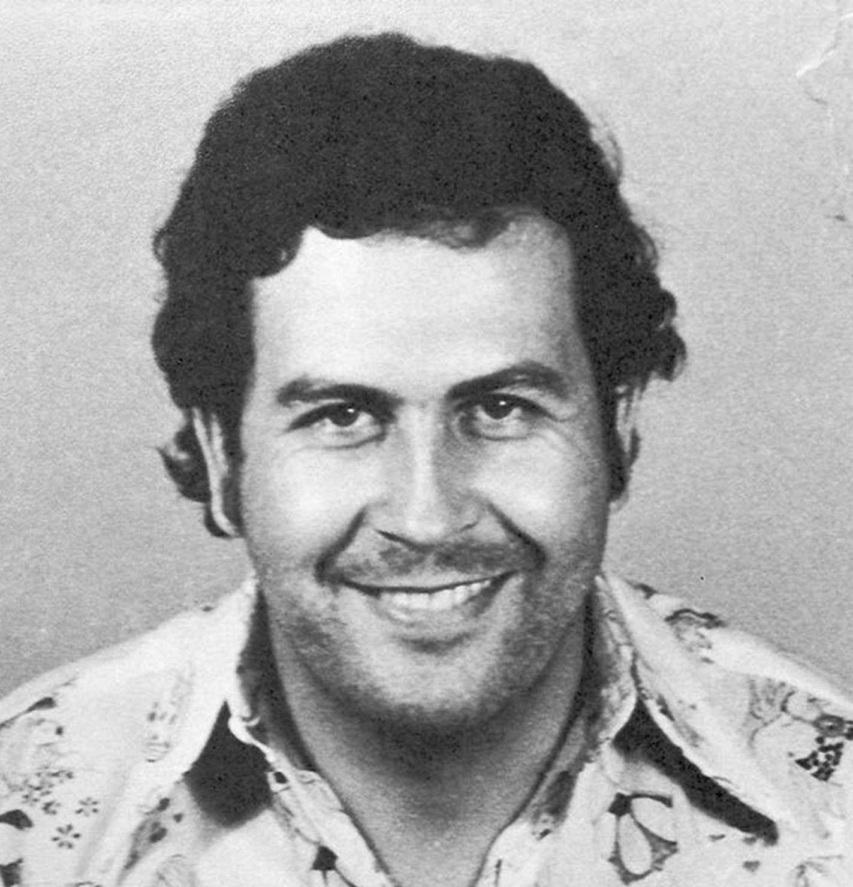
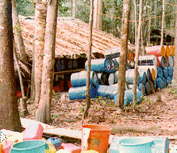

Instituciones
Cómo funciona el poder político
Colombia es una república presidencialista con separación de poderes. El Presidente dirige el Ejecutivo, el Congreso aprueba leyes y controla ciertas decisiones, y la Corte Constitucional, la Corte Suprema y el Consejo de Estado resuelven conflictos legales.
Liberalismo y conservatismo
Dominantes en el siglo XIX y gran parte del siglo XX, organizaron gobiernos y guerras civiles.
Bipartidismo
Fue sostenido por clientelismo, violencia y exclusión, aunque se debilitó desde los años noventa.
Pluralismo
Partidos, movimientos indígenas, verdes, sociales, independientes y plataformas regionales compiten actualmente.
Organismos de control
Fiscalía, Contraloría, Procuraduría, Defensoría y órganos electorales supervisan acciones públicas.
Escándalos e instituciones
Corrupción, compra de votos y parapolítica
El clientelismo permitió la distribución de cargos y contratos a cambio de apoyo electoral. Los escándalos documentados incluyen el Carrusel de la contratación, el proceso 8.000, Odebrecht y la investigación de relaciones entre partidos y organizaciones paramilitares conocida como parapolítica.
La existencia de corrupción no elimina diferencias de responsabilidad ni permite atribuir un delito a partidos o movimientos en su totalidad sin una sentencia.
1970—1990
Carteles y narcoterrorismo


Pablo Escobar y el Cartel de Medellín
Escobar lideró una estructura de narcotráfico con protección política, redes económicas y un amplio aparato armado. Su guerra contra la extradición incluyó magnicidios, bombas y ataques contra edificios públicos.
Cartel de Cali
Los Rodríguez Orejuela construyeron una organización con relaciones internacionales y técnicas de lavado de activos. Fue desmantelada a mediados de los noventa por procesos judiciales y operativos estatales.
Guerra contra la extradición
La extradición fue utilizada por narcotraficantes para presionar al Estado. Esta guerra se expresa en atentados, amenazas y asesinatos de jueces, periodistas y políticos.
Magnicidios y candidatos
Candidatos presidenciales asesinados
Jorge Eliécer Gaitán — 1948
Candidato presidencial y líder liberal asesinado el 9 de abril en Bogotá. Su muerte provocó el Bogotazo y una crisis nacional.
Jaime Pardo Leal — 1987
Precandidato presidencial de la Unión Patriótica asesinado en Caqueza. Su muerte fue parte del exterminio político contra el partido.
Rodrigo Lara Bonilla — 1984
Ministro de Justicia asesinado después de denunciar y sancionar a organizaciones de narcotráfico.
Luis Carlos Galán — 1989
Candidato presidencial asesinado en Soacha durante un mitin. Las investigaciones vincularon el crimen al narcotráfico y a redes políticas criminales.
Carlos Pizarro — 1990
Excomandante del M-19 y candidato presidencial asesinado en una aeronave en Bogotá.
Bernardo Jaramillo Ossa — 1990
Candidato de la Unión Patriótica asesinado en Bogotá. Las investigaciones documentaron redes criminales y responsabilidad de actores estatales y paramilitares.
Manuel Cepeda Vargas — 1994
Senador y dirigente de la Unión Patriótica asesinado en Bogotá. La Corte IDH reconoció responsabilidades estatales.
Álvarez Gardeazábal — 1995
Escritor y aspirante liberal asesinado en Cali. Las investigaciones reconocieron vínculos con redes criminales vinculadas al narcotráfico.
Atentados
Cronología ampliada
1986 — Guillermo Cano
Director de El Espectador asesinado por su trabajo contra el narcotráfico.
1989 — Avianca vuelo 203
Bomba en pleno vuelo en Soacha atribuida al Cartel de Medellín. Murieron todos los ocupantes.
1989 — El Espectador
Carro bomba contra la sede del periódico en Bogotá en una ofensiva narcoterrorista.
1995 — Edificio del DAS
Carro bomba atribuido al Cartel de Cali con decenas de muertos y centenares de heridos.
2002 — Club El Nogal
Atentado que causó decenas de muertes y fue atribuido a las FARC-EP por sentencias posteriores.
1985 — Palacio de Justicia
La toma del M-19 terminó en una operación militar con víctimas civiles y desaparecidos.
1999 — Fokker 50 de Avianca
Aeronave del ejército atacada por las FARC-EP; la investigación y memoria son parte de la violencia contra objetivos estatales.
Fuentes